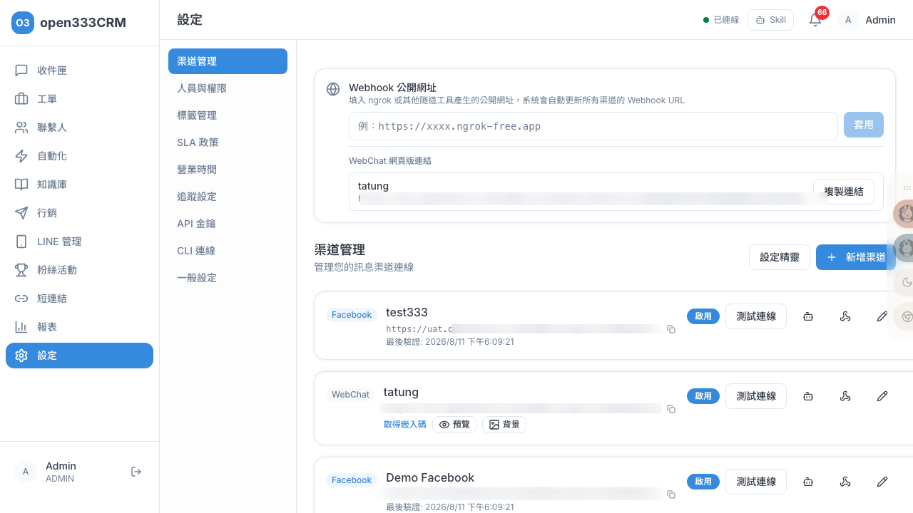
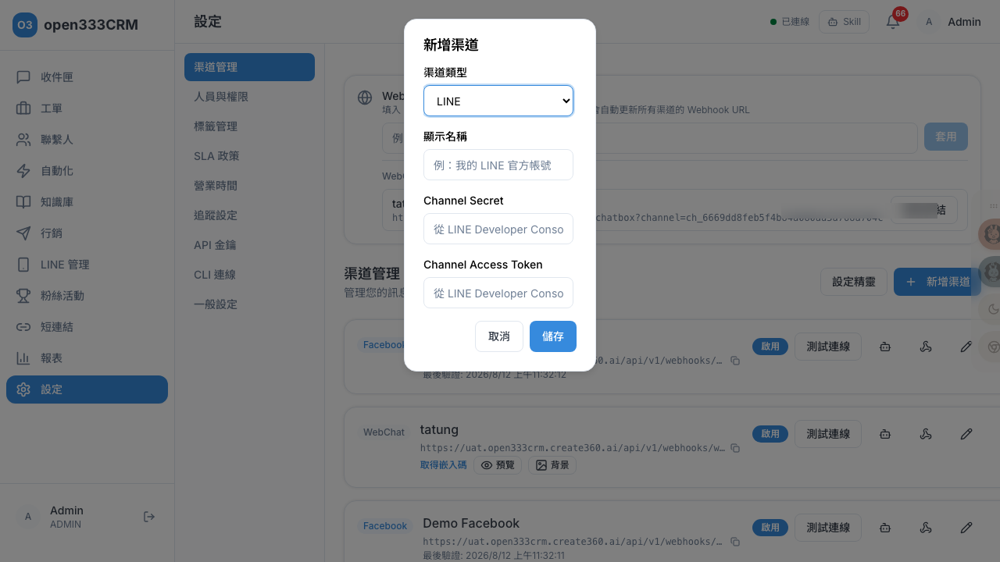
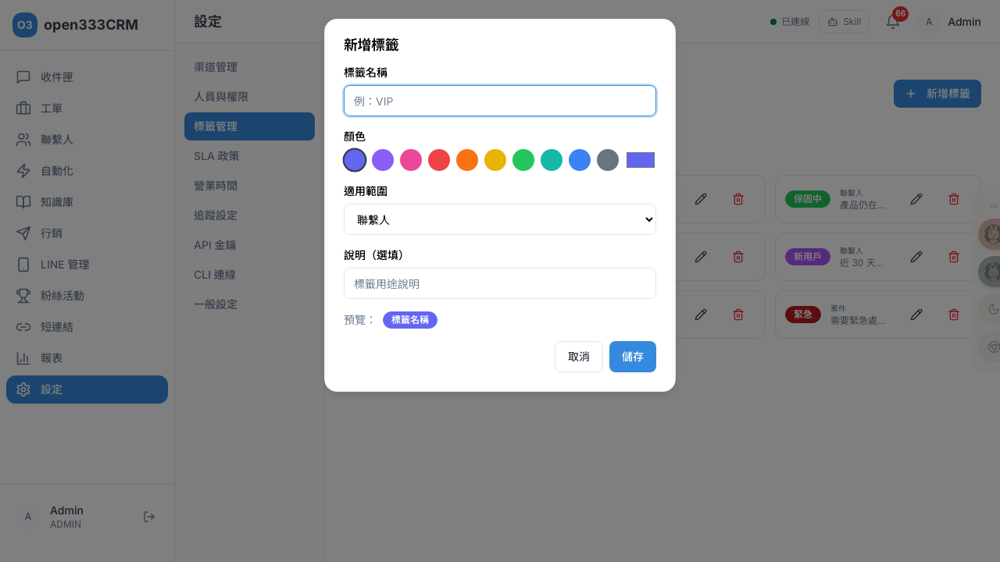
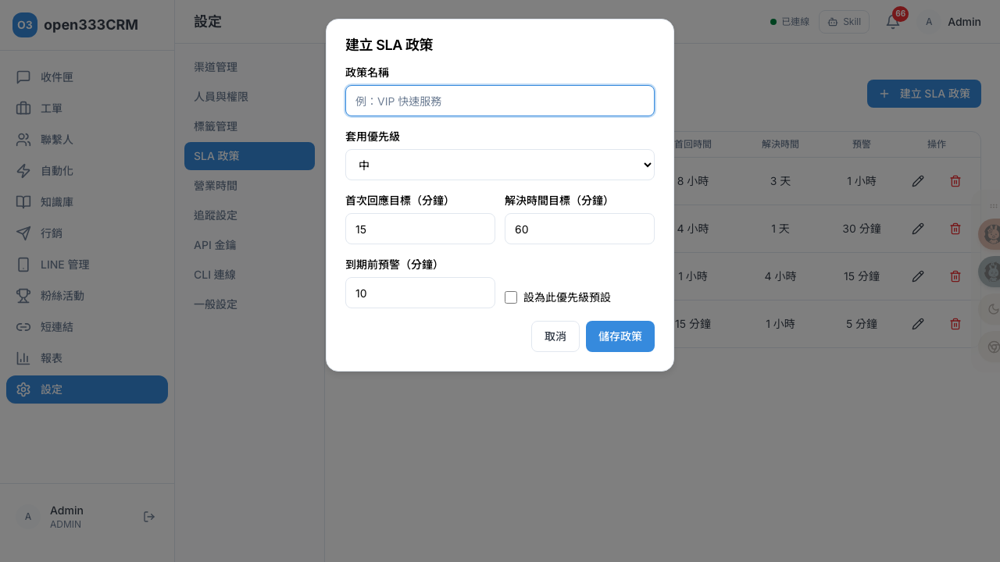

系統設定
系統的控制中心：管理通道連線、人員權限、標籤、SLA 政策、營業時間、追蹤與 API 金鑰。多數設定僅管理員可調整。
1 設定總覽
設定頁左側是直向選單，共 8 個分頁：渠道管理、人員與權限、標籤管理、SLA 政策、營業時間、追蹤設定、API 金鑰、CLI 連線。

2 渠道管理
渠道是「訊息從哪進來」的連線設定。支援 LINE / Facebook / WebChat 三種。可用「設定精靈」4 步驟引導新增（推薦），或「新增渠道」手動填。

各渠道要填的憑證
| 渠道 | 憑證 | 去哪拿 |
|---|---|---|
| LINE | Channel Secret、Channel Access Token | LINE Developer Console → Messaging API |
| App Secret、Page Access Token（EAA... 開頭）+ App ID / Page ID | Meta for Developers | |
| WebChat | 系統自動產生，不需外部憑證 | — |
「測試連線 / 驗證」測的是什麼
- LINE：拿 token 打 LINE 官方 API 驗證是否有效。驗證成功後系統會自動幫你設定 Webhook（顯示「LINE Webhook 已自動設定完成，無需手動配置」），失敗才需手動去 LINE Console 設。
- FB：驗證 Page Token 是否有效。
- WebChat：完成後給一段嵌入碼，貼進你網站的
<body>就能啟用網頁聊天。
3 Bot 設定
從渠道列表對某個 LINE 渠道開啟「Bot 設定」，這裡決定 Bot 怎麼自動應對客戶——是整個 AI 客服行為的核心開關。
Bot 模式（四選一，最重要）
| 模式 | 行為 |
|---|---|
| 關鍵字 + LLM（推薦） | 先比對關鍵字規則，命中就用關鍵字回；沒中再用 AI 回覆 |
| 僅 LLM 回覆 | 全部用 AI 回覆 |
| 僅關鍵字回覆 | 只回關鍵字規則命中的 |
| 關閉（直接人工） | 新對話直接由真人客服處理，不自動回 |
其他 Bot 設定
| 設定 | 說明 |
|---|---|
| Bot 最大回覆次數 | 1–50，預設 5。超過此次數自動轉真人客服 |
| 轉接關鍵字 | 預設「真人、人工、客服、轉接」。客戶訊息含這些字就立刻轉真人 |
| 轉接訊息 | 預設「稍等，正在為您轉接客服人員」，轉接當下發給客戶 |
| 轉接真人提示 | KB 中信心回答時是否附「可轉接真人」提示；方式可選按鈕 / 文字 / 兩者 / 關閉 |
| 非營業時間問候語 | 留空則用「營業時間」分頁的預設回覆 |
| LIFF App ID | 填了短連結（綁本渠道）在 LINE 內點擊才會收集身份（見「09 · 短連結」） |
4 人員與權限
管理客服人員與角色。三種角色的權限由大到小：
| 角色 | 權限 |
|---|---|
| Admin | 完整設定權限，可新增任何角色 |
| Supervisor | 可查看所有對話/案件，可新增 Agent 與 Supervisor（但不能建立 Admin） |
| Agent | 只能看自己負責的對話/案件 |
新增與管理人員
- 新增人員：姓名、Email（必填）、角色、初始密碼（至少 8 字元）。Email 重複會提示「Email 已被使用，請換一個電子信箱」。
- 編輯人員：可改角色；只有 Admin 能重設他人密碼、停用帳號（停用是軟刪除，會跳確認框）。
- 修改密碼（自己的）：需輸入目前密碼 + 新密碼（至少 8 字元）。
只有 Admin / Supervisor 看得到「新增人員」與「編輯」。列表可依角色篩選，下方會自動列出「團隊分組」。
5 標籤管理
標籤用來分類聯繫人、對話、案件。點「新增標籤」開啟對話框設定。

| 欄位 | 說明 |
|---|---|
| 名稱 | 必填 |
| 顏色 | 10 個預設色盤 + 自訂色，有即時預覽 |
| 適用範圍 | 聯繫人 / 對話 / 案件（新建時可選、編輯時不可改） |
| 說明 | 選填 |
vip 的標籤有特殊作用（見「03 · 聯繫人」）。6 SLA 政策
SLA 政策是「工單該多快處理完」的承諾，針對四種優先級各設一組。點「建立 SLA 政策」開啟對話框。

| 欄位 | 意義 | 建議值（緊/高/中/低，分鐘） |
|---|---|---|
| 首次回應目標 | 建立後多久內要第一次回覆 | 15 / 60 / 240 / 480 |
| 解決時間目標 | 多久內要解決（決定工單到期倒數） | 60 / 240 / 1440 / 4320 |
| 到期前預警 | 到期前多久先發預警通知 | 5 / 15 / 30 / 60 |
可勾「設為此優先級預設」。同一優先級只能有一個預設——設某條為預設時，系統會自動取消同優先級其他的預設。
7 營業時間
設定營業時間後，非營業時間收到的訊息會自動回覆提示訊息。有一個總開關——沒啟用時系統一律視為「營業中」。
| 設定 | 說明 |
|---|---|
| 時區 | 預設 Asia/Taipei (GMT+8) |
| 每週排程 | 週一～週日各設開關與時段，預設週一至週五 09:00–18:00、週六日休息 |
| 假日 | 可加多個非營業日期 |
| 自動回覆訊息 | 預設「您好！目前為非營業時間，我們將在營業時間內盡速回覆您。」 |
8 追蹤設定
填入外部追蹤服務 ID，短連結的中轉頁會自動注入對應的追蹤腳本，讓短連結點擊數據同步到 GA4 與 Meta：
| 欄位 | 格式 |
|---|---|
| Google Analytics 4 ID | G- 開頭（如 G-XXXXXXXXXX） |
| Meta Pixel ID | 純數字 |
9 API 金鑰與 CLI
API 金鑰（Partner API）
提供給合作方長期使用的 API 金鑰，權限固定只能推送知識庫文件。可設名稱與過期時間（永不過期 / 30 / 90 / 180 天 / 1 年）。
CLI 連線
產生 token 讓 LLM 或 open333 CLI 直接操作本系統。可設名稱與過期時間（預設 30 天），權限預設是唯讀類（查狀態、探索 API、查統計）。